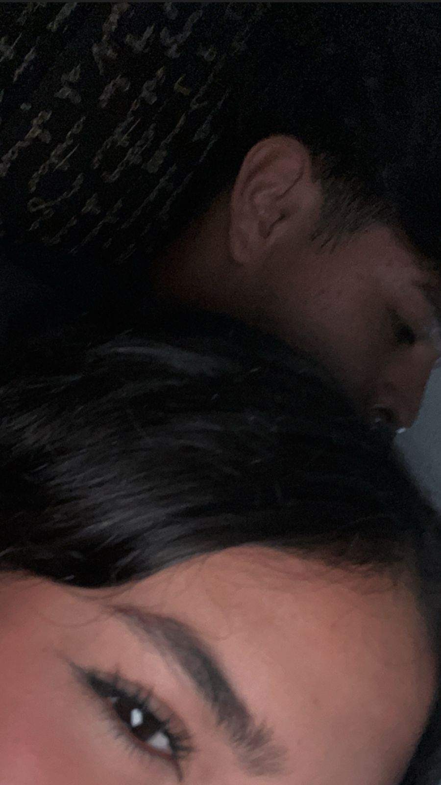

Mi Anahí: Hoy cierro este pequeño libro de recuerdos que hemos ido escribiendo sin darnos cuenta. Doce semanas. Doce pequeños mundos llenos de risa, insomnio, complicidad, ternura… y tú. Siempre tú. No sé si alguna vez imaginaste que esto duraría tanto, o que alguien tendría el deseo de recordar cada momento contigo con tanto detalle. Pero yo sí. Porque desde el primer mensaje, supe que lo nuestro merecía ser guardado. Y aquí está. Hecho palabra. Hecho memoria. Hecho amor. No cierro esta historia, solo este primer capítulo. Porque la semana 13 ya viene en camino… y quiero seguirte escribiendo. No como una promesa, sino como una elección que hago todos los días. Prometo traspasarlo a puñó y letra como acto de amor hacia ti, corazon Gracias por todo lo que has sido. Por cómo miras, cómo hablas, cómo ríes, cómo sientes. Gracias por no soltarme, por quedarte, por regalarme tu tiempo y tu esencia. Ojalá este resumen de semanas te abrace como tú me abrazas con tus mensajes. Ojalá sepas que aquí tienes a alguien que te quiere de una forma honesta y suave. Y que no planea dejar de hacerlo. Te quiero, Anahí. Y ya estoy preparando el resumen de la semana 13… Porque contigo, lo mejor siempre está por venir. —Tu Isaac 🖋️
